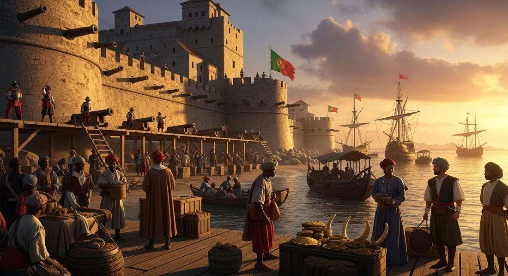

4.4 Maritime Empires Established
- LO-A: European trading posts in Africa and Asia: Portugal and later the Dutch, English, and French established fortified trading posts at strategic ports around Africa and Asia. These posts were profitable for the rulers and merchants involved in the new global trade networks. They weren't governing large territories, just taxing and controlling the sea lanes. The Portuguese network (Goa, Malacca, Hormuz) is the classic model. Asian states respond: isolationism: Not all Asian states accepted European commercial presence. Ming China and Tokugawa Japan both adopted restrictive or isolationist trade policies to limit the "disruptive economic and cultural effects" (AP exam's language) of European-dominated long-distance trade. Japan's Sakoku (1635–1853) allowed trade only with the Dutch, and only at one port (Dejima, Nagasaki). China's Haijin (sea ban) restricted maritime trade for much of this period.
- LO-B: Explain continuities and changes in economic systems and…: African states grow: Some African states grew more powerful through participation in Atlantic trade networks. The Asante Empire (modern Ghana) and the Kingdom of Kongo became major players in the Atlantic economy, though this involvement deeply entangled them with the slave trade. Their participation in trading networks increased their regional influence even as it produced devastating social consequences. Indian Ocean trade continues: European arrival disrupted but did not destroy the existing Indian Ocean trade network. Indigenous Asian merchants, Swahili Arabs, Omanis, Gujaratis, Javanese, continued to operate and, in some periods, actively competed with and resisted European commercial dominance. Intra-Asian trade actually expanded in this period even as Europeans tried to monopolize it.
- LO-C: Explain changes and continuities in systems of slavery…: New labor systems in the Americas: Colonial economies in the Americas required labor. Four systems emerged: the encomienda (labor rights over indigenous people granted to Spanish settlers); the hacienda (large landed estate using debt peonage); the Incan mit'a (adapted by Spanish for silver mining); and chattel slavery (African enslaved people as property, most intensively in Caribbean and Brazil). Indentured servitude was used mainly in English colonies.
Try each question before revealing the answer.
1. Why did Japan's Tokugawa shogunate choose to severely restrict foreign trade (Sakoku) in the 1630s, while simultaneously allowing limited Dutch trade at a single port? What does this selective engagement reveal about Japanese strategic thinking?
2. Why did the Spanish use the existing Inca mit'a labor system for silver mining at Potosí rather than building an entirely new labor system from scratch?
3. The Kingdom of Kongo initially engaged enthusiastically with Portuguese traders, with King Afonso I (1509–1543) converting to Christianity and building close diplomatic ties with Lisbon. How did this partnership eventually become destructive for the Kingdom of Kongo?
4. What is the essential difference between chattel slavery (as practiced in the Atlantic system) and traditional slavery as it existed in Africa and many other pre-modern societies?
5. Gujarat (northwest India) merchants were among the most active traders in the Indian Ocean long before Europeans arrived, and they continued trading actively after the Portuguese established their trading post empire. Why were the Portuguese unable to fully exclude indigenous Indian Ocean merchants from trade, despite their military advantage?
- Explain the process of state building and expansion among various empires and states from 1450 to 1750
- Explain continuities and changes in economic systems and labor systems from 1450 to 1750
- Explain changes and continuities in systems of slavery from 1450 to 1750
Tap a term for its definition.
-
Definition: A Spanish colonial system granting a encomendero (colonist) the right to demand labor and tribute from indigenous people in a defined area in exchange for providing "protection" and Christian education. Significance: AP exam-named labor system; effectively a form of forced labor that contributed to the demographic collapse of indigenous populations alongside disease; eventually phased out as indigenous populations collapsed, replaced by hacienda and African chattel slavery.
-
Definition: A large Spanish colonial agricultural estate whose indigenous workers were bound through debt peonage, owing labor to the landowner to pay off debts they could rarely escape. Significance: AP exam-named labor system; replaced encomienda as the primary system of labor extraction in Spanish America as indigenous populations declined; persisted well beyond the colonial period in Latin America.
-
Definition: An Incan state labor obligation requiring each community to provide a rotating portion of its workers for public projects; adapted by the Spanish to force indigenous Andeans to work in silver mines. Significance: AP exam-named existing labor system; the Spanish colonial mit'a forced tens of thousands of Andean men to work in the Potosí silver mines under deadly conditions, an example of how European colonizers adapted pre-existing indigenous institutions for extractive colonial purposes.
-
Definition: A form of slavery in which enslaved people are treated as movable property ( chattels ), bought, sold, inherited, and mortgaged, with children of enslaved mothers automatically enslaved. Significance: AP exam-named labor system; the defining institution of the Atlantic plantation economy; qualitatively different from most pre-existing slavery systems in denying all legal personhood to enslaved people.
-
Definition: Japan's "closed country" policy under the Tokugawa shogunate (1635–1853), which restricted foreign trade to Dutch and Chinese merchants at the single port of Dejima (Nagasaki) and prohibited Japanese from leaving or foreigners from entering. Significance: AP exam illustrative example of an Asian state adopting isolationist trade policies in response to European commercial expansion; allowed Japan to control the pace and content of foreign influence while maintaining access to useful European technology.
-
Definition: A powerful West African state in present-day Ghana that grew through participation in Atlantic trade networks from the late 17th century, exporting gold and enslaved captives in exchange for European goods, especially firearms. Significance: AP exam illustrative example of an African state that increased its regional influence through maritime trade; the Asante used firearms acquired through trade to expand their territory and power.
-
Definition: A powerful Central African kingdom (present-day Angola and DRC) that engaged extensively with Portuguese traders from the late 15th century, initially as diplomatic partners but increasingly as a source of enslaved captives for the Atlantic trade. Significance: Kongo's participation in Atlantic trade initially increased its influence but eventually destabilized it as the slave trade's demand overwhelmed diplomatic relationships.
-
Definition: A labor contract in which a worker agrees to work for a set period (typically 4–7 years) in exchange for passage to the Americas; workers were legally bound to their employer for the contract period. Significance: AP exam-named labor system; used primarily in English North American colonies; unlike chattel slavery, had a defined endpoint and did not apply to children; nevertheless constituted a form of coerced labor for the contract period.
🗺️ European Trading Posts: Establishing a Presence
After Portuguese navigators opened sea routes to Africa, the Indian Ocean, and the Americas in the late 15th century, European states began establishing permanent commercial presences in these regions. The model varied by location: in the Indian Ocean and along the African coast, the primary instrument was the fortified trading post; in the Americas, it was the territorial colony.
Portugal built its Indian Ocean network first. By 1515, it had seized control of three critical chokepoints: Goa (on India's western coast, 1510), controlling access to the rich cloth and spice markets of the Malabar Coast; Malacca (on the Malay Peninsula, 1511), controlling the strait between the Indian Ocean and the South China Sea; and Hormuz (at the mouth of the Persian Gulf, 1515), controlling access to the Persian and Ottoman markets. These posts were profitable. They allowed Portugal to tax maritime traffic and extract duties from Asian merchants passing through. They were also symbols of a new kind of commercial empire: one built on sea power and strategic geography rather than territorial conquest.

A Portuguese feitoria (fortified trading post), the building block of Europe's first global maritime empire. Rather than conquer territory, Portugal seized strategic chokepoints: Goa, Malacca, and Hormuz gave them control over the entire Indian Ocean trade network. AI-generated illustration (Google Gemini, 2025), commercially licensed.
The Dutch, English, and French followed similar models, competing with Portugal and each other for control of trading posts across the Indian Ocean and Southeast Asia from the late 16th century onward. The Dutch East India Company (VOC, established 1602) eventually displaced Portugal from most of its Southeast Asian trading posts. The English East India Company (established 1600) established posts on the Indian coast that would later become the foundation of British colonial India.
🏯 Asian Responses: Restriction and Selective Engagement
European commercial expansion was not simply imposed on passive Asian states. Some of the most powerful Asian polities actively chose how to engage, or not engage, with European traders, and some chose restriction over integration.
Ming China had a complex relationship with maritime trade. The Haijin (sea ban) policy, which restricted Chinese participation in private maritime trade, was in effect for much of the 14th–16th centuries, though it was inconsistently enforced and lifted periodically. When the Portuguese arrived at Guangzhou (Canton) in 1513, they were initially expelled. China eventually allowed Portugal a small trading base at Macao (1557), keeping European commerce literally at arm's length from the Chinese mainland.
Tokugawa Japan went further. After decades of civil war and concerns about the politically destabilizing effects of Christian missionary activity (spread through Portuguese and Spanish trade connections), the Tokugawa shogunate implemented the Sakoku ("closed country") policy between 1633–1639. This policy:
- Expelled all Portuguese and Spanish traders and missionaries
- Prohibited Japanese from traveling abroad (on penalty of death)
- Allowed only Dutch and Chinese merchants to trade, and only at Dejima, an artificial island in Nagasaki harbor accessible only by a guarded bridge
- Maintained this selective engagement for over two centuries (until 1853)
🌍 African States and Atlantic Trade
The College Board emphasizes that the growth of Atlantic maritime trading networks created opportunities for some African states that "led to an increase in their influence." Two illustrative examples:
The Asante Empire (in present-day Ghana) emerged in the late 17th century and rapidly expanded by leveraging its position at the center of West African gold and slave trades. Asante rulers used European firearms, acquired through Atlantic trade, to conquer neighboring peoples and extract tribute, building one of the most powerful states in West African history. The same Atlantic economy that was devastating other West African communities through the slave trade was providing the Asante with the tools to dominate their region.
The Kingdom of Kongo provides a more complex and ultimately tragic story. Kongo was a sophisticated, centrally organized kingdom that initially engaged with Portuguese traders as equals, its king, Afonso I (r. 1509–1543), became Christian, sent ambassadors to Lisbon, and built a diplomatic relationship with Portugal. But the demand for enslaved people gradually overwhelmed this diplomatic partnership. By the 17th century, Kongo was deeply enmeshed in the slave trade, both as a source of enslaved captives and as a state whose internal politics were increasingly destabilized by the commercial pressures of Atlantic slaving. Afonso I wrote letters to the Portuguese king protesting the trade's destruction of his kingdom; he was politely ignored.
🌊 The Indian Ocean Trade: Continuity and Competition
European arrival in the Indian Ocean did not destroy the existing trade network. The College Board emphasizes that "existing trade networks in the Indian Ocean continued to flourish and included intra-Asian trade and Asian merchants", despite Portuguese, Dutch, and English attempts to monopolize commerce.
Indigenous Indian Ocean merchants, Swahili Arabs (East African coast), Omanis (Persian Gulf), Gujaratis (northwest India), and Javanese (Southeast Asia), had operated sophisticated long-distance trade networks for centuries before Europeans arrived. They had commercial relationships, language skills, knowledge of seasonal winds, and community networks that Europeans could not replicate or easily displace. Europeans were most effective at the chokepoints they controlled militarily; away from those chokepoints, indigenous merchants continued operating largely as before.
⛓️ New Labor Systems in the Americas
Colonial economies in the Americas were fundamentally agricultural and extractive, growing cash crops and mining precious metals for export to Europe. This required labor in environments where indigenous populations had been devastated by disease. European colonizers developed multiple labor systems to solve this problem:
These videos will help you review Maritime Empires Established and solidify key concepts before your exam.
- A) The failure of European states to maintain profitable trade with Asian markets
- B) Japan's decision to end all participation in Indian Ocean trade networks
- C) An Asian state limiting the economic and cultural disruption of European-dominated trade through selective restriction
- D) The superiority of Dutch commercial methods compared to Portuguese and Spanish approaches
- A) A colonial labor system that combined legal coercion of indigenous labor with rhetorical justifications based on religious obligation
- B) How European colonizers created entirely new labor institutions with no connection to existing indigenous practices
- C) The successful integration of indigenous workers into the Spanish colonial economy as voluntary participants
- D) Spain's use of African enslaved labor as the primary source of colonial agricultural production
- A) Portuguese naval power was sufficient to eliminate indigenous competition in Indian Ocean trade
- B) The Portuguese trading post empire was primarily a cultural rather than commercial enterprise
- C) Gujarati merchants were protected by Mughal political alliances that prevented Portuguese interference
- D) Existing Indian Ocean trade networks showed significant continuity despite the disruption of European commercial expansion
- A) The failure of Spanish colonizers to develop new labor systems in the Andes
- B) How European colonizers adapted existing indigenous labor institutions for the extractive purposes of colonial economies
- C) The voluntary participation of Andean communities in Spanish colonial economic development
- D) The Spanish decision to use African enslaved labor rather than indigenous labor in South American mines
- A) Some African states that initially gained influence through Atlantic trade later found that trade's demand for enslaved people was destabilizing their societies
- B) African rulers had no knowledge of the Atlantic slave trade and were unable to understand its consequences
- C) The Kingdom of Kongo had never participated in any form of slavery before European contact
- D) Portugal immediately suspended the slave trade in response to Afonso's protests
Answer all three parts.
Part A
Explain ONE way an Asian state limited the effects of European maritime expansion in the period 1450–1750.
Part B
Describe ONE labor system that European colonizers used in the Americas in the period 1450–1750 and explain how it exploited the available labor pool.
Part C
Explain how the participation of African states in Atlantic trade networks both increased their influence and created long-term destabilization, using ONE specific example.
Consider both change (new labor systems, new trade networks) and continuity (Indian Ocean trade persisted; pre-existing labor practices like the mit'a were adapted, not replaced).